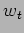
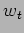

Next: Investigation of Metrics
Up: Adaptive Optimal Telescope Scheduling
Previous: Telescope domain
Contents
In this bit describe what the whole project is about and how things will be done
-experimental methods
- Investigate metrics with which to compare the efficiency and quality of generated schedules.
- Design software instrumentation to embed within the current robotic control system to collect data with which to characterize the operating environment.
- Using data collected by the embedded software, I will design a simulation framework incorporating knowledge of the operating environment characteristics with which to test any schedulers developed.
- Develop a despatch scheduler as a baseline with which to test more advanced schedulers, this will be capable of configuration to use different scheduling policies.
- Tune the baseline scheduler using various controllable parameters, typically objective weighting functions and biad function, to investigate the limits of this scheduling paradigm in the telescope scheduling context.
- As the basis for the final system, I will develop a look-ahead scheduler incorporating short-term prediction of environmental statistics to allow advanced planning of observations and using feedback of performance to adjust the plan objectives.
- Investigate variation of scheduling control parameters and horizon length on quality of schedules generated under varying environmental models to determine how to adapt to these - teh quality of schedules generated will be compared to those geenrated by the baseline system working at its maximum efficiency.
- Knowledge gained from this investigation will be incorporated into a final adaptive, look-ahead scheduler.
Some more details on plan...
- Develop metrics. Global quality to compare policies and architecure, local within arch to guide search.
- Data gathering - statistics of environment, P2DB characterization and rate of change.
- Develop scheduler.
- Prediction of environment and other models - test.
- Forward planning i.e. lookahead and predicted reward of future actions.
- Compare local despatch to expected future rewards model. (m/c sims). [Bresina et al., 1995] has excellent discussion on this topic wrt ATIS.
- Variation of weights and (search) metrics.
- Compare effects of various stochastic bias fns.
- Distributed scheduling architecture - take into account user/group preferences (DMs).
- Global optimization of DSA/DM.
How does this manifest itself wrt actual studies/experiments ?
- Metrics investigation study (Sect. 4).
- Database characterization study (Sect. 8).
- Data collection and prediction study (Sect. 5).
- Scheduler architecture and simulation framework study (Sect. 6).
- Case study 1. 1 or 2 night shakedown, effects of
 and  (Sect. 9).
and  (Sect. 9).
- Man against machine study (Sect. 10).
- Long term case study. Many scoring and selection options, tracers (sect. 11).
- Advanced architecture and framework enhancements.
- Long term case study 2. Advanced LAS/BAS extract SQM under varing conditions.
- Long term case study 3. LAS/BAS adaptation to predicted conditions.
Note: Data collection: If running a simulation over an extended period, the DB content would naturally change, need to be able to gather P2DB arrival and modification statistics - i.e. want to know how the DB changes in time not just a snapshot at T - this cant be very detailed just how many groups added/removed - maybe some statistical data could be extracted on a daily basis from P2DB e.g. average exposure length, spread of group lengths - needs more thought - this is a means of characterizing the DB - can then generate simulated datasets in addition to snapshots of real data.
Next: Investigation of Metrics
Up: Adaptive Optimal Telescope Scheduling
Previous: Telescope domain
Contents
Steve Fraser
2008-01-31